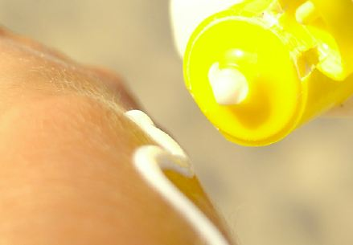

When Gray Skies Burn
The inconvenient truth about sun protection and your health
Gianna Le
Spring 2007

Can living in the foggy Bay Area increase your risk of skin cancer? Do
you believe clouds shield you from the sun’s rays? Do you let your
guard down when it’s not sunny and skip out on sunscreen?
You might be one of many who believe in the popular
misconception that a hidden sun is a safe sun. However, do not be
fooled by gray skies. It is virtually impossible to avoid exposure to
the sun’s ultraviolet (UV) rays since the earth’s atmosphere, p thick
clouds, and reflect off of water. Although clouds provide shade, they
do block the invisible radiation that ultimately causes skin damage.
Because people living in the Bay Area are not as inclined to put on
sunscreen as those who live in sunnier environments, they can actually
experience an increased risk of developing skin cancer.
Skin cancer is the most common form of cancer.
Luckily, it is also highly preventable because it is primarily caused
by unprotected exposure UV radiation. Despite the American Cancer
Society estimates that more than one million new cases of non-melanoma
skin cancer will be diagnosed in 2006, accompanied by approximately
11,000 deaths.
Why is the sun so dangerous? The detrimental effect
is caused by the energy in UV rays. Three different types of UV rays
exist: UVA, UVB, and UVC, in order of decreasing wavelengths. Rays with
shorter wavelengths have higher energy and inflict the most harm.
Luckily for us, the short but powerful UVC rays do not reach the
Earth’s surface because they are absorbed by gases in the atmosphere.
The longer UVA and UVB rays are the real antagonists in our fight
against skin damage. UVB radiation has the most immediate impact on our
skin and is largely responsible for short-term consequences such as
sunburns. UVA rays, sometimes referred to as the “silent killers,” are
the primary cause of chronic conditions like wrinkles and skin cancer.
Do sunscreens effectively block these damaging rays?
This question is the basis of a class action in California in May 2006
against leading sunscreen makers who manufacture popular brands such as
Coppertone, Neutrogena, Banana Boat, Hawaiian Tropic, and Bullfrog.
According to their labels, these products not only provide broad-
spectrum coverage but are also waterproof. However, their opponents
argue that these claims mislead consumers into placing false security
in the sunscreens and ultimately misusing them. Notably, the companies’
claims do not agree with dermatological research that reveals the lack
of UVA-blocking agents in these sunscreens. This is due to the fact
that many UVA-blocking agents are still pending by the Food and Drug on
(FDA). Furthermore, all sunscreens are not waterproof, regardless of
their label, because they lose their effectiveness when immersed in
water. While they are water-resistant up to a maximum amount of time,
people still have to reapply sunscreen after swimming or sweating
heavily.
How do sunscreens promote their effectiveness? The
degree of protection the product provides is based on the Sun
Protection Factor (SPF) displayed on the front of the bottle. Most
people assume that the higher the SPF, the better the protection.
Charlie Loy, a recent graduate from the University of California,
Berkeley and a die-hard surfer, confesses, “I hardly use sunblock. I am
out in the sun a lot but often not long enough to put it on. But when I
plan on being outside longer, I buy one with a high SPF.”
Loy is not alone in this belief. In August 1999,
Philippe Autier, MD, from the European Institute of Oncology in Milan,
Italy, and his international colleagues published a study in the
Journal of the National Cancer Institute which found that the use of
higher-SPF sunscreens led to increased sun exposure. In the study, two
groups of French and Swiss volunteers used unlabeled sunscreen during
their vacations: Group A used an SPF 10 solution, while Group B used an
SPF 30 lotion. Although those in Group B did not know that their
sunscreen offered more protection from the sunlight, they spent, on
average, 20 percent longer in the sun, ostensibly because it took
longer for them to show signs of sunburn. This reinforces the
hypothesis that increased protection from sunburn, whether known to the
user or not, prolongs time spent in the sun and increases their risk of
developing skin cancer. Furthermore, in his July 2000 article in the
Western Journal of Medicine, Autier suggests that “the ability of
sunscreen to delay sunburn occurrence probably encouraged people toward
longer exposure. Increasing the quantity of sunscreen applied to the
skin may also have this effect on people’s behavior.”